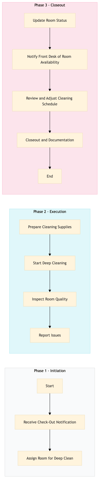

| Role | Steps |
|---|---|
| Housekeeping Supervisor | 1.1 1.2 3.1 3.2 3.3 3.4 |
| Housekeeper | 2.1 2.2 2.3 2.4 |
| Step | Name | Role | System | Input | Output | KPI | Dec? | Exc? | Pain Point / Risk |
|---|---|---|---|---|---|---|---|---|---|
| 1.1 | Receive Check-Out Notification | Housekeeping Supervisor | Oracle OPERA Cloud | Check-out notification from Oracle OPERA Cloud | Room assignment for deep cleaning | Less than 5 minutes | N | Y | Delays in receiving check-out notifications can lead to room reassignment issues. |
| 1.2 | Assign Room for Deep Clean | Housekeeping Supervisor | Oracle OPERA Cloud | Room assignment from Oracle OPERA Cloud | Deep clean task assigned to housekeeper | Less than 2 minutes | N | Y | Overlooking rooms for deep cleaning can lead to reduced guest satisfaction. |
| 2.1 | Prepare Cleaning Supplies | Housekeeper | Birchstreet Procurement | Cleaning supply inventory from Birchstreet Procurement | Supplies checklist for deep cleaning | Less than 10 minutes | N | Y | Insufficient supplies can delay the cleaning process. |
| 2.2 | Start Deep Cleaning | Housekeeper | Oracle OPERA Cloud | Deep clean task from Oracle OPERA Cloud | Room cleaned and sanitized | Less than 30 minutes | N | Y | Inadequate cleaning can lead to guest complaints. |
| 2.3 | Inspect Room Quality | Housekeeper | Oracle OPERA Cloud | Room inspection form | Inspection report | Less than 5 minutes | Y | N | Missed issues during inspection can lead to guest dissatisfaction. |
| 2.4 | Report Issues | Housekeeper | Oracle OPERA Cloud | Inspection report | Issue reported in Oracle OPERA Cloud | Less than 2 minutes | N | Y | Unreported issues can lead to repeat problems. |
| 3.1 | Update Room Status | Housekeeping Supervisor | Oracle OPERA Cloud | Issue report from Oracle OPERA Cloud | Room status updated in Oracle OPERA Cloud | Less than 1 minute | N | Y | Incorrect room status updates can lead to operational inefficiencies. |
| 3.2 | Notify Front Desk of Room Availability | Housekeeping Supervisor | Oracle OPERA Cloud | Room status update from Oracle OPERA Cloud | Notification to front desk in Oracle OPERA Cloud | Less than 2 minutes | N | Y | Delayed notifications can result in missed reservations. |
| 3.3 | Review and Adjust Cleaning Schedule | Housekeeping Supervisor | Oracle OPERA Cloud | Room availability from Oracle OPERA Cloud | Adjusted cleaning schedule in Oracle OPERA Cloud | Less than 5 minutes | N | Y | Inefficient scheduling can lead to overworked staff or understaffed rooms. |
| 3.4 | Closeout and Documentation | Housekeeping Supervisor | Oracle OPERA Cloud | Adjusted cleaning schedule from Oracle OPERA Cloud | Final documentation in Oracle OPERA Cloud | Less than 3 minutes | N | Y | Incomplete documentation can lead to compliance issues. |
The Departure Room Deep Clean process ensures that guest rooms are thoroughly cleaned and prepared for new guests at a Marriott full-service hotel. This process is crucial for maintaining high standards of cleanliness and guest satisfaction.